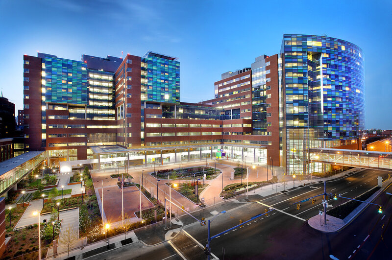

<html></html>

<head>
  <meta charset="UTF-8">
  <meta name="viewport" content="width=device-width, initial-scale=1.0">

  <title>about us</title>
  <link href="https://cdn.jsdelivr.net/npm/bootstrap@5.2.0-beta1/dist/css/bootstrap.min.css" rel="stylesheet"
    integrity="sha384-0evHe/X+R7YkIZDRvuzKMRqM+OrBnVFBL6DOitfPri4tjfHxaWutUpFmBp4vmVor" crossorigin="anonymous">
  <script src="https://cdn.jsdelivr.net/npm/bootstrap@5.2.0-beta1/dist/js/bootstrap.bundle.min.js"
    integrity="sha384-pprn3073KE6tl6bjs2QrFaJGz5/SUsLqktiwsUTF55Jfv3qYSDhgCecCxMW52nD2"
    crossorigin="anonymous"></script>
  <style>
    .container1 {
      width: 1500px;
      height: 100px;
      text-align: left;
      background-color: lightgreen;
      margin: auto;
    }

    .h2 {
      color: crimson;
      text-align: left;
      font-family: "Arial Narrow Bold";
      background-color: aquamarine;
    }

    .p {
      text-align: "right";
      padding: "2px";
      margin: auto;
    }

    .facilities {
      color: white;
      text-align: center;
      font-family: "Arial Narrow Bold";
      background-color: rgb(62, 62, 103);
    }

    .h3 {
      color: rgb(80, 190, 26);
      font-family: "times";
      text-decoration: underline;

    }

    .lab {
      color: rgb(80, 190, 26);
      font-family: "times";
      text-decoration: underline;
    }

    .classroom {
      color: rgb(80, 190, 26);
      font-family: "times";
      text-decoration: underline;
    }

    .transportation {
      color: rgb(80, 190, 26);
      font-family: "times";
      text-decoration: underline;
    }

    @media screen and (max-width:999px) {
      .container {
        width: 100%;
        height: auto;
        margin: auto;
      }
    }
  </style>
</head>

<body>
  <div class="container-fluid">
    <div class="row">
      <div class="container1">

        <div class="row">
          <div class="col-md-1">
            
          </div>
          <div class="col-md-7"><br>
            <h4>Fortune Rise Health and Wellness Care</h4>
            <h5>In the arms of healing, miracles happen.</h5>
          </div>
        </div>
      </div>
      <div class="col-md-12">
        <nav class="navbar navbar-expand-lg navbar-dark bg-dark">
          <div class="container-fluid">
            <a class="navbar-brand" href="index.html">HOME</a>
            <button class="navbar-toggler" type="button" data-bs-toggle="collapse"
              data-bs-target="#navbarSupportedContent" aria-controls="navbarSupportedContent" aria-expanded="false"
              aria-label="Toggle navigation">
              <span class="navbar-toggler-icon"></span>
            </button>
            <div class="collapse navbar-collapse" id="navbarSupportedContent">
              <ul class="navbar-nav me-auto mb-2 mb-lg-0">
                <li class="nav-item dropdown">
                  <a style="color:white" class="nav-link dropdown-toggle" href="#" id="navbarDropdown" role="button"
                    data-bs-toggle="dropdown" aria-expanded="false">
                    OUR FACILITIES
                  </a>
                  <ul class="dropdown-menu" aria-labelledby="navbarDropdown">
                    <li><a class="dropdown-item" href="primarycare.html">Primary Care</a></li>
                    <li>
                      <hr class="dropdown-divider">
                    </li>
                    <li><a class="dropdown-item" href="Emergencycare.html">Emergency Care</a></li>
                    <li>
                      <hr class="dropdown-divider">
                    </li>
                    <li><a class="dropdown-item" href="labproffiences.html">Lab Proffiencies</a></li>
                    <li>
                      <hr class="dropdown-divider">
                    </li>
                    <li><a class="dropdown-item" href="onlinedoctor.html">Online Doctor Consulatancy</a></li>
                    <li>
                      <hr class="dropdown-divider">
                    </li>
                    <li><a class="dropdown-item" href="appointment.html">Doctor Appointment</a></li>
                    <li>
                      <hr class="dropdown-divider">
                    </li>
                    <li><a class="dropdown-item" href="nursing.html">Nursing</a></li>
                  </ul>
                </li>
                <li class="nav-item">
                  <a class="nav-link active" aria-current="page" href="aboutus.html">ABOUT US</a>
                </li>
                <li class="nav-item dropdown">
                  <a style="color:white" class="nav-link dropdown-toggle" href="#" id="navbarDropdown" role="button"
                    data-bs-toggle="dropdown" aria-expanded="false">
                    SERVICES
                  </a>
                  <ul class="dropdown-menu" aria-labelledby="navbarDropdown">
                    <li><a class="dropdown-item" href="cse.html">General Surgery</a></li>
                    <li>
                      <hr class="dropdown-divider">
                    </li>
                    <li><a class="dropdown-item" href="ece.html">Dermatology</a></li>
                    <li>
                      <hr class="dropdown-divider">
                    </li>
                    <li><a class="dropdown-item" href="mech.html">Gastroenterology</a></li>
                    <li>
                      <hr class="dropdown-divider">
                    </li>
                    <li><a class="dropdown-item" href="eee.html">Dentistry</a></li>
                    <li>
                      <hr class="dropdown-divider">
                    </li>
                    <li><a class="dropdown-item" href="civil.html">Gynecology</a></li>
                    <li>
                      <hr class="dropdown-divider">
                    </li>
                    <li><a class="dropdown-item" href="aiml.html">Pediatrics</a></li>
                    <li>
                      <hr class="dropdown-divider">
                    </li>
                    <li><a class="dropdown-item" href="ds.html">Tertiary care</a></li>

                  </ul>
                </li>
                <li class="nav-item">
                  <a class="nav-link active" aria-current="page" href="gallery.html">GALLERY</a>
                </li>
                <li class="nav-item">
                  <a class="nav-link active" aria-current="page" href="wellness">WELLNESS</a>
                </li>
              </ul>
              <form class="d-flex" role="search">
                <input class="form-control me-2" type="search" placeholder="Search" aria-label="Search">
                <button class="btn btn-outline-success" type="submit">Search</button>
              </form>
            </div>
          </div>
        </nav>
      </div>
    </div>
    <br />
    <br />
    <div class="container">
      <div class="row">
        <div class="col-md-6" style="text-align: center;">
          
          <h4 style="color:lightgreen">Sri Arutla Ramachandra Reddy
          </h4>
          <p>Fortune Rise today is a standing testimony to the vision of Arutla Prashanth, its Founder & Chairman, whose
            vision was to impart value based Healthcare in the larger interests of the society. A Profesinal doctor who
            has an MDP from Harvard, USA, Prashanth is the grandson of Sri Arutla Ramachandra Reddy and Dr. Arutla
            Kamala Devi, who spent the best part of their lives for the betterment of the less privileged in the
            Telangana region. The founder’s vision stems from the illustrious lineage he belongs to.
          </p>
        </div>
        <div class="col-md-6" style="text-align: center;">
          
          <h4 style="color:lightgreen">Dr. Arutla Kamala Devi
          </h4>
          <p>Dr. Arutla Kamala Devi was elected to the assembly thrice from Alair (Nalgonda Dist.) and was general
            secretary of the AP Women’s Federation. She is the first and only woman opposition leader of AP Assembly
            till date. The Kakatiya University conferred an honorary Doctorate degree on her. Arutla Ramachandra Reddy
            was elected twice to the Assembly and represented Ramayampet (Medak) and Bhongir (Nalgonda). Such was their
            selfless devotion to public cause that they even turned down the allotment of land given to all MLAs in the
            up market Banjara Hills area in Hyderabad. Fortune, as an institution, draws inspiration from their lives
            and seeks to live up to the values upheld by such noble souls, viz. absolute sincerity in their ceaseless
            search for the purpose of their lives. HITAM believes that education is the soul of the society and aspires
            to contribute its mite towards academic progress.
          </p>
        </div>
      </div>
    </div>
    <div class="container" style="background-color: aliceblue;">
      <div class="row">
        <h3>Building the Institution</h3>
        <br>
        <p>Fortune Rise, operating under M/S Royal Educational Society, was established in 2001. Located in Hyderabad,
          Telangana, this premier medical facility was formerly known as Royal Healthcare Center. It is a private
          institution accredited by the National Assessment and Accreditation Council (NAAC) and the National Board of
          Accreditation (NBA), affiliated with Jawaharlal Nehru Technological University, Hyderabad, and approved by the
          All India Council for Technical Education (AICTE).<br><br>

          Fortune Rise is committed to promoting health and well-being through its innovative approach to environmental
          sustainability. As India's first green hospital to receive a Silver Rating, Fortune Rise is dedicated to
          creating a healing and rejuvenating atmosphere. The hospital features natural cooling towers, lush greenery,
          ample natural lighting, and the use of local materials, all contributing to an environment designed to support
          patient recovery and wellness.<br><br>

          The proactive vision of Fortune Rise's founders is evident in their early adoption of green building
          practices. This foresight has created a facility where the indoor temperature on a hot April afternoon is
          significantly cooler than the outside, thanks to natural ventilation and abundant plant life. The refreshing
          breeze through the corridors and the verdant surroundings offer a serene and therapeutic environment,
          enhancing the healing process.<br><br>

          The green design of Fortune Rise's buildings fosters a calm and inspiring atmosphere, encouraging patients'
          recovery, curiosity, and alertness. We believe that a soothing environment is crucial for healing and
          rehabilitation. Our green campus aims to instill a sense of ecological responsibility in everyone, emphasizing
          the importance of preserving and contributing to our environment.<br><br>

          In addition to its state-of-the-art medical facilities, Fortune Rise provides extensive amenities to cater to
          the needs of patients and their families. The campus includes facilities for indoor and outdoor recreation, a
          dispensary for medical emergencies, a hygienic cafeteria, and transportation services to reduce travel stress,
          ensuring a comfortable and supportive stay for all.</p>
      </div>

    </div>

    <div class="row">
      <h2 class="facilities">FACILITIES</h2>
    </div>
    <br />
    <br />
    <div class="container">
      <div class="row">
        <h5>Campus
        </h5>
        <div class="col-md-6">

          <p>The facility's campus is the face of Fortune Rise. It is the first thing that anybody who visits the
            hospital would notice. It plays a huge role in defining what the institution stands for and the image and
            value it holds. Fortune Rise’s IGBC Silver-rated expansive, magnificent, green campus and the aesthetic
            landscape give patients a therapeutic feel and generate a calming and positive effect on the overall
            environment</p>
        </div>
        <div class="col-md-2">
          
        </div>
        <div class="col-md-2">
          
        </div>
        <div class="col-md-2">
          
        </div>
      </div>
      <br>
      <div class="row">
        <div class="col-md-2">
          <br>
          
        </div>
        <div class="col-md-2">
          <br>
          
        </div>
        <div class="col-md-2">
          <br>
          
        </div>
        <div class="col-md-6">
          <h5>Lab</h5>
          <p>The labs in Fortune Rise provide all the amenities required for patient care and medical research. We
            continuously upgrade the quality of our labs to meet modern standards, advancing medical knowledge and
            improving patient outcomes. We offer specialized labs for every department, equipped with essential tools
            and technology for various medical specialties and treatments.
          </p>
        </div>
      </div>
      <br>

      <div class="row">
        <h5>Transporation
        </h5>
        <div class="col-md-6">

          <p>Fortune Rise provides transport facilities for patients and staff during the daytime. Our buses travel to
            and from multiple routes around the city. The location of our hospital is quite convenient, as it is easily
            accessible by both private and public transportation services.<br>

            Fortune Rise provides several facilities for the well-being and benefit of patients to ensure they receive
            care in a convenient and comfortable environment. Our commitment to quality healthcare acts as a driving
            force, encouraging patients to achieve their best health outcomes. Patients are not only treated for their
            conditions but also feel supported and empowered to improve their overall well-being, preparing them to face
            daily life with renewed strength and confidence.
          </p>
        </div>
        <div class="col-md-2">
          
        </div>
        <div class="col-md-2">
          
        </div>
        <div class="col-md-2">
          
        </div>
      </div>
      <br>
      <div class="row">
        <div class="col-md-2">
          <br>
          
        </div>
        <div class="col-md-2">
          <br>
          
        </div>
        <div class="col-md-2">
          <br>
          
        </div>
        <div class="col-md-6">
          <h5>Doctors</h5>
          <p>The doctors at Fortune Rise are highly skilled professionals dedicated to providing exceptional healthcare
            services. Our medical team comprises specialists from various fields, each with extensive experience and
            expertise in their respective areas. They are committed to staying updated with the latest advancements in
            medicine and continuously enhancing their skills through ongoing education and training.

            At Fortune Rise, our doctors prioritize patient-centered care, focusing on understanding each patient's
            unique needs and developing personalized treatment plans. They work collaboratively with other healthcare
            professionals to ensure comprehensive and coordinated care, aiming for the best possible outcomes for every
            patient.
          </p>
        </div>
      </div>
    </div>
    <br>
    <div style="background-color: rgb(83, 82, 82); color:white">
      <h3 style=" text-align:center">CONTACT US</h3>
      <hr>
      <div class="container-fluid">
        <div class="row">
          <div class=" col-md-4">
            Gowdavally,Hyderabad<br>
            500043,<br>
            Telangana,india<br>
            phone:7032447734<br>
            Email:support@hitam.ac.in
          </div>
          <div class="col-md-4">
            <a href="https://goo.gl/maps/iw6rQjMpq1oAJV4p9">How to reach us</a><br>
            <a href="https://mail.google.com/mail/u/0/#inbox">Hitam mail</a><br>
            <a href="gallery.html">photo
              Gallery</a>
          </div>
          <div class="col-md-4">
            FOLLOW US<br>
            <a href="https://www.facebook.com/HITAMHyderabad"></a>
            <a href="https://instagram.com/hitamdiaries?igshid=YmMyMTA2M2Y="></a>
            <a href="https://twitter.com/hitam_hyderabad"></a>
            <a href="https://www.linkedin.com/school/hitamhyderabad"></a>
            <a href="https://www.youtube.com/channel/UCxi83tJmniFcBQxdabZB5GA"></a>
          </div>
        </div>

      </div>
    </div>
  </div>

</body>

</html>